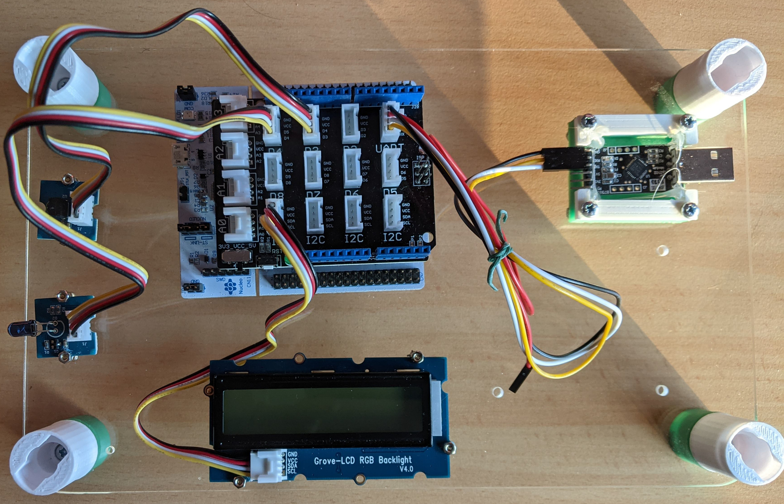
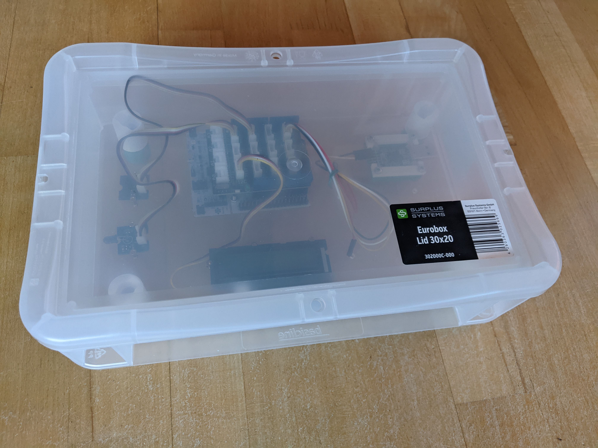
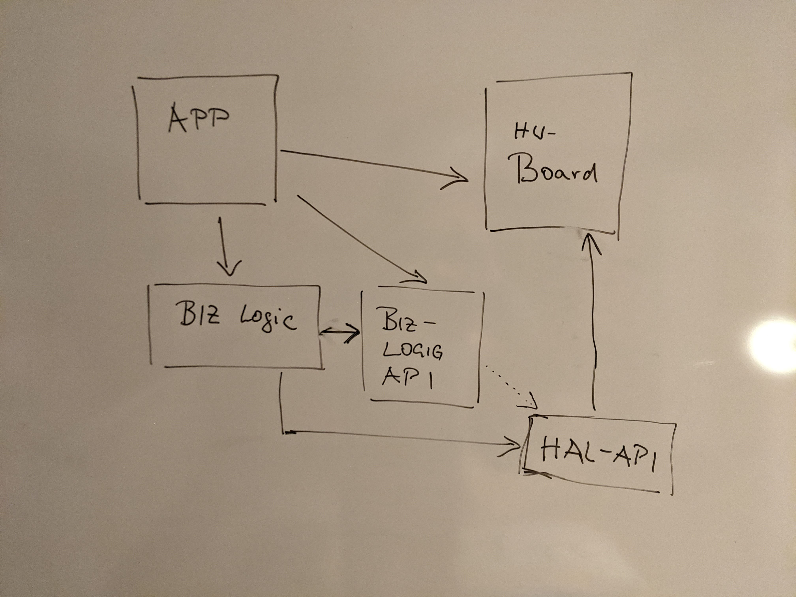

InfraRed Arbitrary Toolbox
iret is an acconym for InfraRed Arbitrary Toolbox.
The infrared arbitrary toolbox is a combination a a piece of MCU hardware with attached infrared sender and infrared receiver and a software/firmware installed on the MCU. implemented in Rust.
The whole project is splitted accross multiple repositories:
- This repository - The documentation of the system (hardware and software)
- Firmware - Embedded firmware specifically to Nucleo-STM32G071RB board
- Manchester Code - Rust library to support manchester code encoding/decoding
This project is an experiment
- To use mddoc for hardware/software technical documentation “as code”
- To have a overarching repository that links several contributing repositories losely by a documentation as code
- In software to turn an exploration project into something that can be reused according to the CRP (common reuse principle)
Motivation
Embedded software centric and Rust centric.
Reference Architecture
The reference architecture can act as blue print,
It encourages the software quality attributes:
No overhead: Only the amount of software that is really necessary
- Improved maintenance less code to maintain
- No runtime side effects
Open closed principle:
Common Reuse principle: Clean interfaces
- Embedded HAL api is universal since software mapping abstraction is possible for established/ standardized hardware peripherals like i2c, spi, uart, gpio
Sample projects
- An embedded project is not just software but hardware, and physical interfaces to the environment.
- A close link needs to be maintained between between all those parts
- SysML is one very valid approach for industrial grade project
For this kind or software centric playground documented sample projects are chosen to provide evidence for the software reference architecture applied.
Hardware
Requirements
- No electronic design. no PCB design, no manufacturing including soldering shall be required
- The Hardwaresetup shall be fixed, transportable and easy to bring up.
- It should possible to disassemble the whole hardware without destroying the components.
Solution
- Use a MCU COTS board with Arduino pin connectors.
- Use Grove/Seeed shield to plug in peripherals
As MCU hardware STM nucleo board are picked because they are broadly used and there is excelent hal support for allmost all of them.
What we need is
- A timer with ISR and an input pin for reading infrared telegrams
- A timer with ISR and a pwm with output pin for writing telegrams
- An uart to allow communication from remote
- An optional display that shows arbitrary information like software version/variant, activity status
Nothing special, any Nucleo eval buard will do. Since a Nucleo-stm32G071RB is a already available by chance, we go for that.
BOM
| No | Units | Description/Reference |
|---|---|---|
| 1 | 1x | Nucleo-STM32G071RB |
| 2 | 1x | Grove Baseshield V2 |
| 3 | 1x | Grove Infrared receiver |
| 4 | 1x | Grove Infrared emitter |
| 5 | 1x | Grove LCD RGB Backlight |
Mechanical Fixing
Stackable base plate with holes, and assembled parts

You can detect:
- middle: Nucleo board with hocked up grove base shield
- left side top: Infrared Reciever
- left side button: Infrared Emitter
- button: 16x2 LCD display
- right side: UART to USB (CP2103) converter for convenience
Fits into an Euro Box 20cm x 30 cm x 7.5 cm for dust free storage

Software
Reference Architecture
Simple (RTOS free) embedded iot devices can use a reference architecture like

APP
- The application the embedded device is running
- Unit that implements top level of control and behavior
- One application runs at a time
- An application requires certain hardware resource available
Board
- Maps the hardware resources provided by the board into the software
- Implements Embedded HAL Interface for the specific board resources
Embedded HAL Interface
- General hardware abstraction for common types of peripherals
- like GPIO input, output, I2C, SPI, UART, ADC, DAC, CAN, timer
- Is same for all processor architectures and boards
Biz Logic Component
- Provides an certain well-specified business logic
- encapsulated into a reusable component
- It has no dependencies to hardware/board since it is independent upon any specific hardware
- It might require certain hardware, to work with using the Embedded HAL Interface interface exclusively Thus, there is a dependency to the interface, but not to the board
- Business Logic Components might implement some business hardware communication protocol of a chip connected via a standard HAL peripheral, it could be called a driver
Instanced Reference Architecture in Rust
[Draft]
Processor Arch specifics
- target command set
- Interrupt vector priority/ ISR handling (pending)
- critical sections
No OS specifics
- panic handler
- logging
Peripherals
MCU Vendor (SVD file) -> xyz-hal crate embedded-hal dependency
Board
Depending on the requirements to the IOT device
Rust environment for embedded
- embedded book
- defmt for logging
Async processing/ async await
- https://crates.io/crates/nb
Hardware binding
- embedded hal
- memory protection -- ownership, borrowing